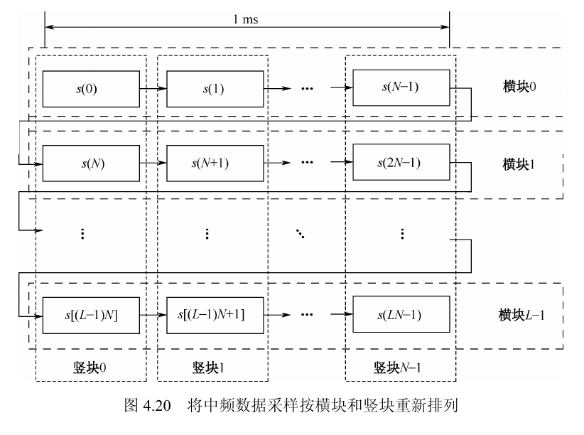

把 GNSS 学习和 AI 工具实践整理成可复用的知识库。
这里记录软件接收机学习笔记、AI 编码工具链实验和可继续复盘的开源项目。
三条主线
用学习、实践和资料沉淀组织内容：笔记用于复习，项目用于验证，收藏用于扩展下一步探索。
精选笔记
保留已经整理成 HTML 的章节与基础推导，优先展示最适合复习和串联的入口。
精选讲义

4.1.6 基于数据分块和频率补偿的信号捕获
这页已经被整理成完整讲义，内容不是简单附注，而是把分块、相干增益、频率补偿、竖块 FFT、横块捕获和复杂度推导串成一条自洽叙述线。
- 保留了核心公式链路：块间增益函数、最优补偿量、竖块 FFT 与最终二维频率/码相位估计。
- 加入了对同相叠加、余频、重排矩阵物理含义的解释，适合复习而不必回翻原资料。
- 配套交互图和原图重组，方便从直觉和推导两个层面理解。
$G(L,f_k)$
$\Delta f_{\text{step}}\approx 1\text{ kHz}/L$
$\hat f=f_i+m\cdot 1\text{ kHz}/L$
信号基础
-
卷积直觉与频域涂抹
从冲激分解和 LTI 系统解释窗函数频谱为什么会把谱线涂开。
-
C/A 码扩频基带信号
整理数据 bit 采样、sinc 包络、1 kHz 离散谱线和功率谱起伏。
-
FFT 互相关中的共轭与反向索引
分清
conj(fft(a))、fft(conj(a))和循环相关顺序。
Convolution
C/A code
FFT
跟踪环章节
-
4.2.1 基本的锁相环
比较一阶、二阶、三阶 PLL 的带宽、动态应力和适用场景。
-
4.2.2 线性 PLL 热噪声性能
保留教材公式和图 4.31/4.32，并合并补充笔记中的问题分析。
-
4.2.3 载波跟踪环
重排教材正文、公式、表格和原书配图，适合按章节复习。
PLL
热噪声
Carrier tracking
OFDM 从算法到实现
-
第 1 讲：为什么需要 OFDM？
从多径效应、频率选择性衰落和单载波均衡器复杂度，引出 OFDM 的分而治之。
OFDM
多径
FFT
继续浏览
完整索引会保留章节页、专题补充和后续视频笔记入口，适合按课程结构继续复习。
打开笔记索引代表项目
用项目说明问题、方法和可复盘结果，而不是只放仓库摘要。
SHENAO1/ai-handoff-init
Python
AI Handoff Init
解决问题减少在 Claude Code、Codex CLI 和 GitHub Copilot 之间切换时反复说明项目背景。
实现方式为不同 AI 编码助手生成统一的上下文启动文件和项目说明入口。
可看内容AI 编码工作流、上下文交接、项目初始化实践。
ai-agents
claude-code
codex
developer-tools
查看仓库
SHENAO1/mind-master
Python
Mind Master
解决问题把 Word 课程笔记从线性文档整理成可浏览、可复习的结构化导图。
实现方式本地解析 DOCX，保留 LaTeX 公式、图证卡和导出验证流程。
可看内容Markmap 学习导图、课程复习工具、HTML / SVG / PNG / PDF 导出。
codex-skill
docx
latex
markmap
查看仓库
开源收藏摘录
少量保留会反复回看的项目，记录类别和收藏原因，避免让资料区喧宾夺主。
PLFJY/ContextMenuMgr
Windows 工具
管理右键菜单和新建菜单时可参考。
liuskywalkerjskd/Control-Note 课程资料控制理论讲义，适合补充工程直觉。
NousResearch/hermes-agent AI Agent观察工具调用、长期记忆和 Agent 形态。
affaan-m/everything-claude-code Agent Harness收集 Claude Code、Codex 和同类工具的实践资料。
farion1231/cc-switch 多助手入口对比 Claude Code、Codex、OpenCode 等桌面入口设计。
open-rdma/open-rdma 网络与硬件RDMA 入门、活动和 hands-on 材料索引。
下一步路线
把后续工作写成状态清单，便于持续维护，也便于读者理解这个站点会怎样更新。
补 GNSS 捕获与跟踪笔记
把最常复习的章节继续整理成讲义页，保持统一入口。
为两个项目补详情页
沉淀动机、设计、截图、使用方式和复盘结论。
把 Stars 拆成资料分类
先区分 AI 工具、课程资料、系统工具、网络与硬件。
统一章节页导航
逐步接入上一篇 / 下一篇、更新时间和标签系统。
完善 GitHub Pages 与域名
结构稳定后再处理部署细节和自定义域名。
关于 / 方向
这个站点用于把零散笔记、实验代码和开源资料整理成可回看的知识系统。
定位
我主要关注 GNSS 软件接收机、信号处理基础、AI 辅助编码和学习工具链。
内容组织原则
- 首页展示个人方向、代表文章、项目和资料入口。
- Notes 保留章节索引与学习文章发现。
- Projects 展示已经动手做过的工具和复盘线索。
- Stars 只保留值得回看的开源资料摘录。
当前状态
- 已接入 3 篇 HTML 讲义。
- 已展示 ai-handoff-init 与 mind-master 两个项目。
- 开源收藏已收敛为资料摘录，后续再扩展分类。